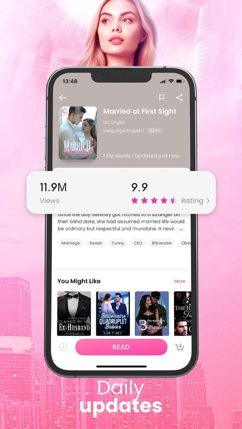

GoodNovel 对比实测：BookTok 引流 + 免费金币，海外网文阅读还能这样玩
同样是海外免费网文平台，GoodNovel 靠内置 BookTok 短视频和新人保护机制把创作者生态盘活了。本文和 Webnovel、Wuxiaworld 等同类平台横向对比，帮你判断该不该装。
海外免费网文这条赛道，这两年已经卷成一片红海——Webnovel 靠阅文的正版中文翻译打底，Wuxiaworld 深耕武侠玄幻译介多年，还有 Kindle Vella 这种大厂系的分章付费阅读。GoodNovel 就是在这样的格局里冲出来的一匹黑马，我用了快三个月，说一下它在同类里到底排什么位置、值不值得装。
定位：它在同类里的生态位
先说赛道分层。目前海外免费网文平台大致分三档：
第一档是译介系：Wuxiaworld、Webnovel 这类，核心卖点是"把中文网文翻译成英文给海外读者看"，内容以武侠玄幻、修仙都市为主，读者定位偏硬核中文网文移民或英文区的网文爱好者。
第二档是原创系：GoodNovel、Radish、Ream 这类，直接在海外落地、面向英文原创作者开放投稿，题材上霸总（Billionaire）、狼人（Werewolf）、奇幻（Fantasy）这三大品类占到了日活榜 80% 以上。
第三档是大厂系：Kindle Vella 等，背靠 Kindle 的用户基础，但分章付费的门槛更高、读者转化效率反而不如前两档的纯免费金币模式。
GoodNovel 属于第二档里最激进的那个。你去看它的官网就能感觉到——不是传统阅读器的风格，更像一个"网文书 + 短视频"的混合体。它的差异化主要体现在三个地方，也是我觉得它能从 Radish、Ream 等同类里跑出来的核心原因。

差异化一：BookTok 内置短视频——其他同类没有的流量入口
这是 GoodNovel 最独的一张牌。它在 App 内直接做了一个叫 BookTok 的短视频板块，读者和作者可以把书里的高能片段（霸总求婚、狼人 Alpha 回归、重生打脸这类）截成 15-30 秒的视频，配热门 BGM 发在 App 内，同时一键同步到 TikTok 和 Instagram Reels。
为什么这招管用？因为同类平台的新书冷启动全靠平台算法推荐位——编辑给你推一次首页，能不能留住读者全看内容本身。GoodNovel 等于把流量入口直接交给了作者自己。社区里有不少新人作者分享过：一条 BookTok 视频在 TikTok 上跑了 50 万播放，当天新书订阅量直接翻了 10 倍。这个量级的效果，在 Radish 或 Ream 上你花推广预算都不一定买得到。
差异化二：新人保护机制——算法前 30 天加权、签约门槛极低
GoodNovel 目前有超过 8 万名签约作者，但真正在日更且有稳定读者的活跃作者只有 1.5-2 万人左右。剩下的要么是只签了一本、要么早就停更了。这意味着新人的真实对手不是 8 万人，而是那 1-2 万同题材的活跃作者。
更关键的是它的算法策略——新作者的前 30 天推荐期会给比老作者更高的曝光权重，只要日更稳定 + 读者互动好（每条评论都回复），新书就有机会被推上首页新作者专区。而且签约门槛真的很低，在官网的创作者后台注册就能直接投稿，过审签完就上架，不需要像传统出版社那样写选题报。
当然，签约门槛低也意味着竞争残酷。热门题材里狼人周榜前 20 基本被头部作者垄断，霸总的竞争也很激烈。如果你是新人作者，建议先选科幻或小众奇幻题材切入——这些赛道热门作者密度低，编辑资源反而会倾斜给新人。
差异化三：免费金币体系——通勤阅读量真的可以一分钱不花
这是读者端最实在的差异。GoodNovel 的金币解锁模式和同类一样，但它给免费金币的渠道设计得比较密集：
- 每日签到：打开 App 就算，每天 5-10 金币，连续签到第 7 天额外给 30-50
- 激励视频：每天最多看 10 次，每次 20-30 金币
- 新用户欢迎礼包：注册前 7 天每天额外送一批，第一天最多约 100 金币
保守估算，每天做完签到 + 看 5 次视频，大概能攒 110-160 金币。而解锁一章普通网文只要 12-28 金币，热门的霸总/狼人章节稍贵也不过 20-28 金币。换句话说，每天免费能看 5-10 章，正好是一趟通勤的阅读量。
这个力度在同类里属于上游。Radish 虽然也有免费金币，但视频奖励每天限 3 次，加起来撑死了看 2-3 章，想多看基本得充。GoodNovel 的激励视频没有次数硬限制（10 次上限对大多数人来说已经够了），这一点对轻度阅读用户的留存效果非常直接。
它的取舍——这些优势是有代价的
说点不好的，免得大家觉得我在写软文。GoodNovel 为了这些差异化，在其他方面做了明显的取舍。
第一，内容题材集中度高、窄。 霸总、狼人、奇幻这三大品类占了日活榜的 80%+，想看正经的硬科幻、严肃文学、甚至系统流升级文这类在 Wuxiaworld 上能找到不少的品类，GoodNovel 上要么极少、要么就是质量很一般的同人。这不是平台能力问题——是它的核心用户群就是冲着"爽文快读"来的，内容供给自然向这个方向倾斜。
第二，海外平台，国内直连有门槛。 GoodNovel 的服务器主要部署在北美，国内直接下载 App 或打开官网经常会遇到加载慢、甚至连不上的情况。虽然它在东南亚有一些节点，但体验远不如 Radish（新加坡节点）或 Webnovel（国内有专门的加速线路）。如果你在国内想稳定用，基本得挂代理，这是劝退不少人的硬伤。
第三，追长篇的单价不低。 单章解锁的模式，追一本 500 章的长篇下来，总花费肯定比订阅周会员贵。订阅会员解锁章节比金币单买便宜约 30%，但会员本身要花钱。如果你每天就看 5-10 章，免费金币够撑；但一旦追上头、一天看 20-30 章，就得考虑要不要开订阅或者换 Radish 的包月模式。金币换算表和订阅方案的详细对比在goodnovel文档里列得很清楚。
第四，账号注销体验糟糕。 没有 App 内注销按钮，得发邮件到 help@goodnovel.com 说明注销意愿、附上账号邮箱和昵称才能走流程。注销后金币余额清零、已解锁章节记录消失、书架和评论历史全清除。这条在同类里都算体验差的——Radish 至少在 App 设置里有个注销入口。

选购结论：什么样的人该装
说了这么多，总结一下适用场景：
应该装的：
- 喜欢霸总、狼人、奇幻这类爽文题材、偏移动端碎片化阅读的海外用户或在海外生活的华人
- 想试水英文网文创作、不想一开始就签传统合约的新人作者——GoodNovel 的新人保护 + BookTok 引流是真金白银的流量
- 轻度阅读用户，每天通勤想看看、不想充钱，靠免费金币就能满足阅读量
不建议装的：
- 想在国内不挂代理直接用的——直连体验太差
- 偏好严肃文学、硬科幻、武侠玄幻译介的——这方面 Wuxiaworld 或 Webnovel 的内容储备明显更充足
- 重度网文用户，一天看 20 章以上的——算下来金币成本不如 Radish 的包月划算
一句话：GoodNovel 不是海外网文平台里内容最硬核的，也不是覆盖面最广的，但它在"移动端爽文 + 短视频引流 + 免费门槛"这三个点上卡得很准，对于它的目标用户群来说，确实比同类好用。这套软件的完整资料同步在了 GitHub、Gitee 和 GitCode 三个仓库，国内访问的朋友优先 Gitee 或 GitCode 更顺畅。